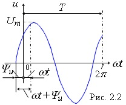
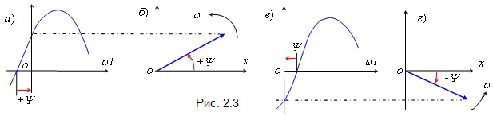

2.1.3. Основные параметры синусоидальных функций
Cинусоидальные функции времени характеризуются следующими параметрами:

• Мгновенное значение
• Амплитуда
• Период
• Частота
• Фаза
• Начальная фаза
• Угловая частота
• Соотношение между
T
, ω и
f
◊ Угол cдвигa фаз
◊ Среднее значение гармонической функции
◊ Действующее значение гармонической функции
